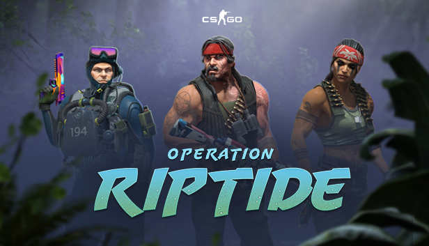
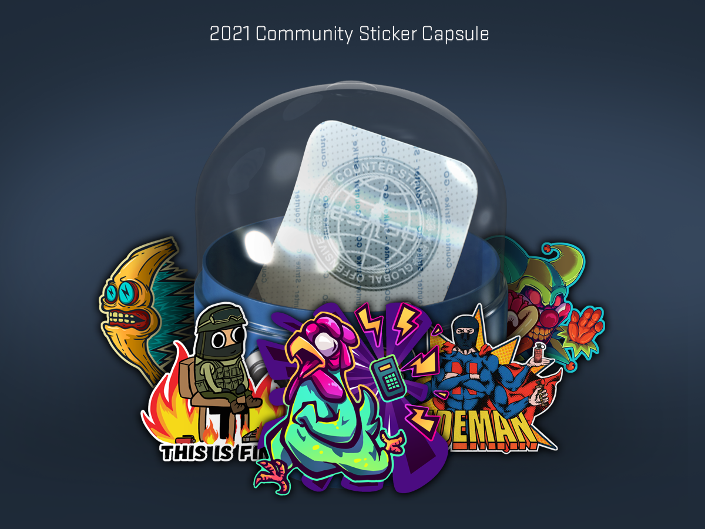
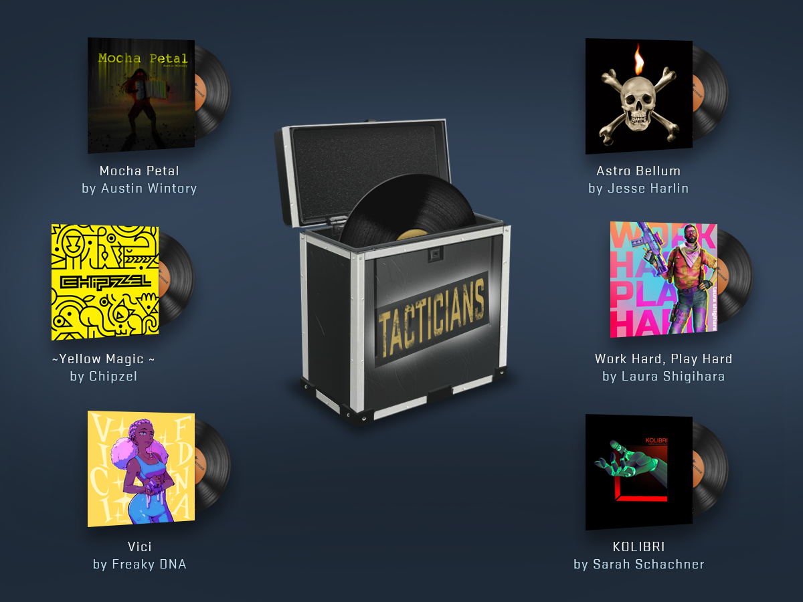
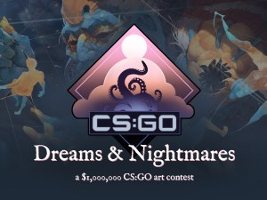
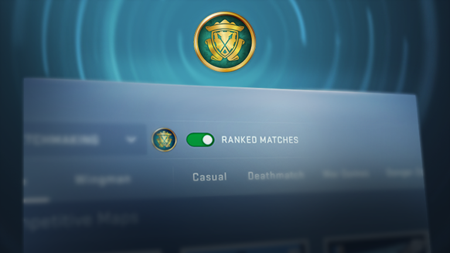

Apresentando a Operação Correnteza
Apresentamos a Operação Correnteza, com novos mapas, um sistema de missões reformulado, novas opções para os seus modos de jogo favoritos — com filas privadas a partidas competitivas curtas — e mais! Cumpra as suas missões semanais e escolha dentre uma variedade de recompensas, incluindo novos agentes, coleções de armas, adesivos e emblemas.
Cápsula de Adesivos da Comunidade de 2021
Lançamos hoje a Cápsula de Adesivos da Comunidade de 2021, contendo 21 adesivos diferentes enviados à Oficina Steam por vários artistas da comunidade.
Seja para fazer parecer que a partida foi “EZ” ou dizer aos seus aliados que “Está Tudo Bem”, há um adesivo para todos os gostos.
Estratégias que soam bem
Hoje, estamos lançando a Caixa de Trilhas Sonoras dos Estrategistas, contendo seis Trilhas Sonoras inéditas compostas por Austin Wintory, Chipzel, Jesse Harlin, Laura Shigihara, Leonard Paul (Freaky DNA) e Sarah Schachner.
Não há melhor estratégia que compartilhar o seu novo hino de destaque com o resto do servidor!
Anúncio do concurso da Oficina do CS:GO “Sonhos e Pesadelos”
No dia 22 de julho, a equipe do CS:GO dará início ao concurso da Oficina “Sonhos e Pesadelos”.
Estamos em busca de dez revestimentos de arma originais com temática de sonho ou pesadelo para adicionar ao CS:GO. Cada um dos revestimentos vencedores receberá US$ 100 mil. Além de enviar o seu revestimento de arma original para a Oficina do CS:GO, você só precisa de uma conta Steam não limitada para se inscrever. E sim, artes feitas por equipes com mais de uma pessoa também podem ser inscritas.
Para ajudar criadores de conteúdo a entender melhor o que queremos, criamos um site dedicado para o concurso. Lá, você encontrará mais informações sobre os tipos de revestimento que queremos ver, exemplos do tema “Sonhos e Pesadelos”, as instruções de como se inscrever, os detalhes do concurso e muito mais. Também criamos um subfórum nas discussões do CS:GO para artistas, especialistas técnicos e outros colaborarem em inscrições e ideias para o tema do concurso.
Lançamos a Oficina Steam há quase dez anos na expectativa de criar um espaço centralizado para conteúdo criado pela comunidade. Desde então, mais de 5 milhões de criadores de conteúdo enviaram e publicaram mais de 20 milhões de itens novos para diversos jogos Steam, tornando-os disponíveis para milhões de jogadores ao redor do mundo. Além disso, como todos os jogadores desses jogos — incluindo os de CS:GO — sabem, muitos dos itens, mapas e outros conteúdos icônicos foram criados por membros da comunidade.
Ajustes a contas não Prime
O CS:GO virou gratuito para jogar há mais de dois anos e continua popular. Sempre há novos jogadores mergulhando no mundo do CS:GO, e é sempre importante que qualquer pessoa no mundo todo possa baixar e jogar o jogo gratuitamente.
Além de todos os modos disponíveis de graça, novos jogadores poderiam receber itens no fim de partidas e obter uma patente e um Grupo de Habilidade, além de terem um caminho sem custo para transformar a conta em Prime. Infelizmente, com o passar do tempo, esses benefícios viraram um incentivo para que pessoas mal-intencionadas estragassem a experiência de jogadores novatos e veteranos. Por isso, faremos algumas alterações no que é oferecido a novos jogadores.
Eles ainda têm acesso a todos os modos de jogo, servidores da comunidade e mapas da Oficina Steam. Contudo, eles deixarão de obter experiência, patentes, itens no fim de partidas ou Grupos de Habilidade; a partir de agora, esses recursos são exclusivos para contas Prime.
Ainda é possível transformar uma conta em Prime ao adquirir o “Prime Status Upgrade” (Aprimoramento para Conta Prime) na Loja Steam, mas não há mais como virar Prime sem pagar. Além disso, ao comprar o aprimoramento nas próximas duas semanas, a sua experiência e o seu Grupo de Habilidade atuais serão mantidos.
Apresentando partidas não classificatórias
Quando novos jogadores jogarem partidas dos modos “Competitivo”, “Braço-Direito” ou “Zona de Perigo”, a criação de partidas ainda será baseada em habilidade, mas eles deixarão de obter um Grupo de Habilidade.
Jogadores com contas Prime também podem jogar partidas não classificatórias, que não afetarão o Grupo de Habilidade nem têm restrições de Grupo de Habilidade ao criar uma sala.
Seja você um veterano ou um recruta, boa sorte e divirta-se!